CS224N Crash Course
30 minutes · interview speed
This page tells the whole story fast. Each section gives you the working version: enough to answer interview questions with confidence. Links at the end of each section take you into the full lesson for the derivations, the timestamps, and the follow-ups.
1. Word meaning is a vector
The astounding result that opens the course: word meaning can be represented well by a high-dimensional vector of real numbers. Before 2013, meaning lived in hand-built lists like WordNet: synonyms, hypernyms, human labor. Lists miss nuance (“proficient” is not always “good”), miss new senses (“ninja”), and give no graded similarity.
The old encoding was one-hot: one 1, the rest 0s, dimension 500,000+. Every pair is orthogonal. “Seattle motel” never matches “Seattle hotel.”
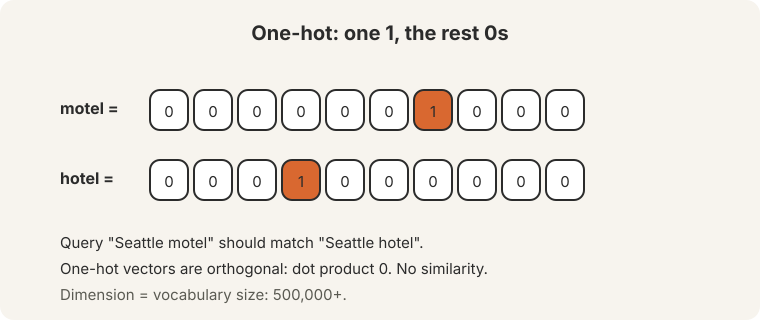
The fix: learn dense vectors so similar words get high dot products.
2. Know a word by the company it keeps
Distributional semantics (Firth, 1957): a word’s meaning comes from the words that appear nearby. Word2vec’s skip-gram slides a window over the corpus and predicts context words from the center word. The objective is the average negative log likelihood. Softmax turns dot products into probabilities: exponentiate, normalize over the vocabulary.
Training is stochastic gradient descent on sampled windows. The noise helps. Two vectors per word (center v, outside u), averaged at the end.
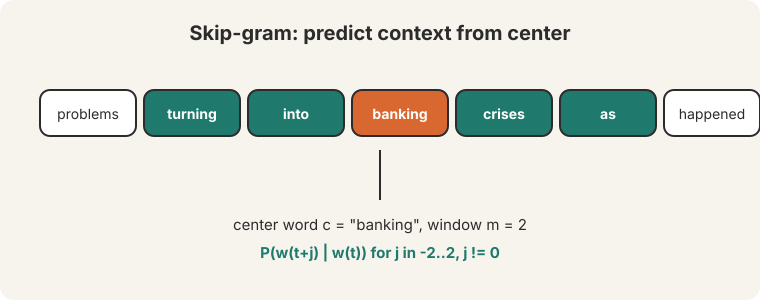
3. The vectors work, and the softmax is too expensive
Neighbors prove the geometry: “bread” and “croissant” share sign patterns. “USA” sits near Canada, America, U.S.A. Analogies demo the offsets: king - man + woman = queen. Cherry-picked, the lecturer admits, and nobody uses analogies in production.
The naive softmax costs 400,000 dot products per prediction. Negative sampling fixes it: train k+1 logistic regressions, one real pair against k negatives. GloVe takes the counting route: ratios of co-occurrence probabilities carry the signal (ice vs steam isolates the solid-gas axis), and the dot product approximates log co-occurrence plus biases.
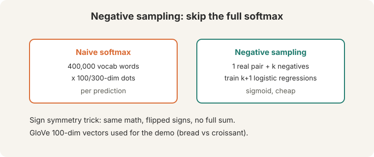
Evaluate intrinsic (analogies, similarity ratings) for speed, extrinsic (downstream NER) for truth. One vector per word is a superposition of its senses.
4. Backprop is the chain rule, applied efficiently
A layer is an affine map plus an activation: z = Wx + b, h = sigma(z). Stack them. The chain rule multiplies local Jacobians: ds/dz = ds/dh x dh/dz. Forward is function application. Backward is the chain rule applied efficiently. Store every intermediate on the way down, reuse on the way up, never recompute. Autograd packages each operation’s backward rule as Lego. Verify new layers with numeric gradient checking.
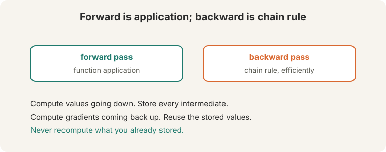
5. Parsing: dense beats sparse
“Scientists count whales from space”: space whales, or counting from space. Prepositional-phrase attachment makes human language globally ambiguous. Dependency parsing represents grammar as head-to-dependent arcs with labels.
Transition-based parsing uses three actions (SHIFT, LEFT-ARC, RIGHT-ARC) on a stack and buffer: greedy, linear time, trained by an oracle. The old approach used millions of sparse indicator features, each seen ~10 times in a million sentences. Feature computation dominated runtime. Chen and Manning (2014) replaced them with dense embeddings of words, POS tags, and labels: concatenate, ReLU, softmax over actions. 92 UAS at transition-parser speed. Google’s Parsey McParseface pushed it to 94.6 with depth and beam search.
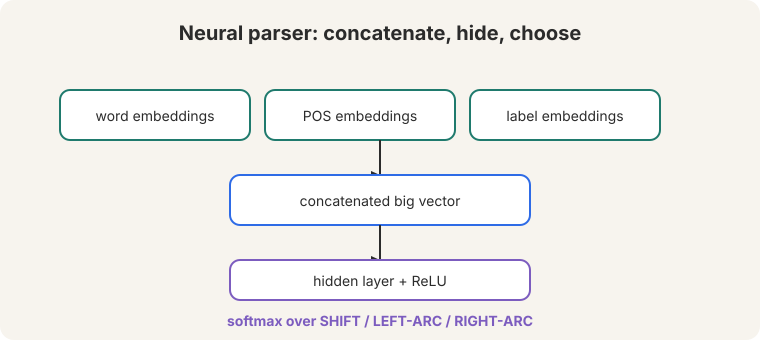
6. Language models and RNNs
A language model assigns a probability to every next word: “the most important concept in the class.” N-grams count trigrams, but sparsity kills them (unseen gets 0, seen-once gets 1) and the tables are huge.
RNNs apply one weight set at every step: h(t) = tanh(W_h h(t-1) + W_e x(t) + b). The hidden state is memory. Each step outputs a vocabulary distribution. Sample to generate. Two fatal problems: the strict t=1..T order cannot be parallelized, and distant context fades ((0.5)^6 leaves under 2%).
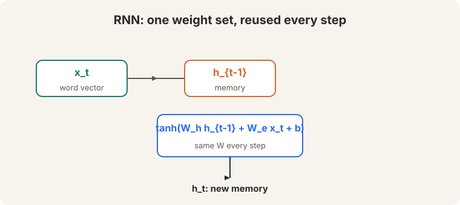
7. LSTMs protect memory, seq2seq translates
Backprop through 30 steps multiplies the Jacobian 30 times. Eigenvalues below 1 vanish the gradient (0.9^30 = 0.042). Above 1 explode it (1.1^30 = 17.4). Vanishing is worse: it is silent. Clip exploding norms at 5, 10, or 20.
The LSTM (1997) guards a cell state with three gates. Forget is really “remember.” The cell update is additive, so gradients flow. Bidirectional LSTMs concatenate both directions. Seq2seq wires two LSTMs for translation: the encoder’s final state seeds the decoder. The bottleneck: one fixed vector must hold the whole sentence.
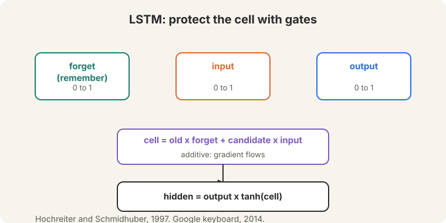
8. Attention: look back like a human
Seq2seq stuffs a sentence into one vector. A human translator looks back at the source while writing. Attention (Bahdanau, 2015) gives the network the same ability: on each decoder step, query the encoder states, score them, softmax into weights, take the weighted average, concatenate, predict. Bonus: shorter gradient paths fight vanishing.
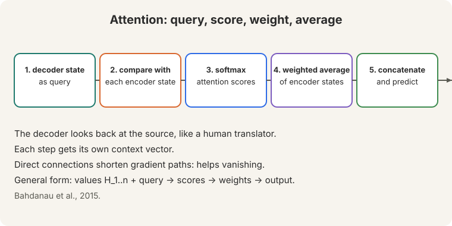
9. Transformers: attention everywhere
RNNs fail twice: linear interaction distance (“the chef who went to the stores … Was”) and O(n) sequential steps. Attention fixes both: constant distance, full parallelism. Self-attention is a set operation, so positional encoding injects order (sinusoidal or learned). Mask the future with minus infinity or training cheats. Scale dots by sqrt(d_k). Multi-head: 8 heads, 64+ dims each. Residuals carry gradient 1. LayerNorm normalizes per word. The block repeats: attention, add-and-norm, feedforward, add-and-norm. The price: quadratic in sequence length.
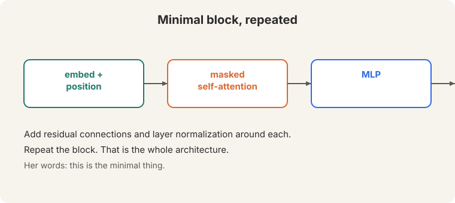
10. Pretraining reconstructs the input
Mask part of a sentence, predict it back, repeat over trillions of words. One objective teaches trivia, syntax, coreference, semantics, sentiment, and world models. BERT: 15% masking, segment embeddings, CLS token, 110M/340M params. GLUE was a sea change. GPT scales the same idea: 117M to 1.5B to 175B, with in-context learning (examples in the prompt, no weight updates). Chinchilla corrected the sizing: smaller models on more data win. Recipe: pretrain, continue pretraining on task data, fine-tune. Warning: fluent but frequently wrong.
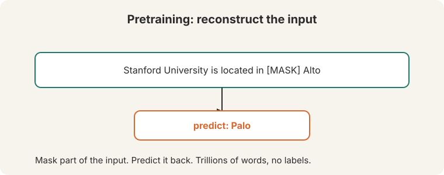
11. Post-training: from prompting to DPO
Few-shot prompting needs no gradient updates. Chain of thought adds a scratch pad: zero-shot “let’s think step by step” jumps 17.7 to 78.7. Instruction tuning (FLAN’s 3M+ examples, LIMA’s 1,000) teaches models to follow instructions. RLHF: instruction-tune, learn a reward model from pairwise preferences (Bradley-Terry: P = sigma(r1-r2)), optimize with a KL leash. Optimizing a learned metric invites reward hacking: gibberish, verbosity, authoritative-over-truthful. DPO skips the reward model: the normalizer cancels, leaving binary classification. 9 of 10 open leaderboard models use it.
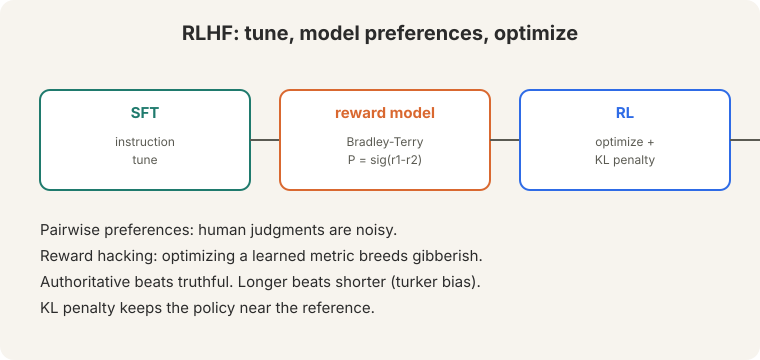
12. Evaluation: never just believe numbers
BLEU counts n-gram overlap plus a brevity penalty. ROUGE counts recall. Both fail: “yep” scores 0 against “heck yes” (false negative), “heck no” matches words while meaning the opposite (false positive). Human eval is the gold standard and it is noisy: 67% agreement after hours of rubrics. Chatbot Arena collects 200,000 pairwise votes into Elo ratings. LLM judges are 100x faster and cheaper, with 98% rank correlation, but length bias (~70%) and monoculture lurk. The harness moves the number: LLaMA 65B MMLU reads 63.7, 63.6, or 48.8 depending on setup. Never just believe numbers.
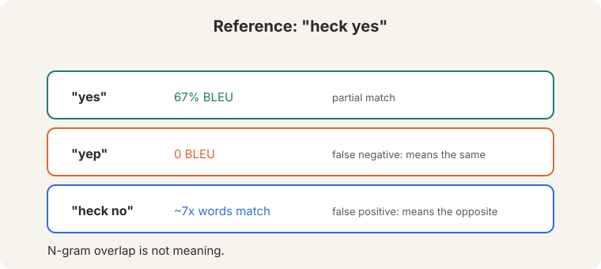
13. Train it efficiently
bf16 is the sweet spot: 2 bytes, 8 exponent bits, fp32 range, no gradient scalers, needs Ampere+. Mixed-precision training costs 16 bytes per parameter per GPU: 2 params, 2 grads, 4 master, 4 momentum, 4 variance. DDP replicates and all-reduces. ZeRO shards (optimizer, then gradients, then parameters). LoRA trains a low-rank delta W + (alpha/r)BA on attention matrices and merges it at inference: no latency. The sustainability warning: training demand outruns global compute capacity.
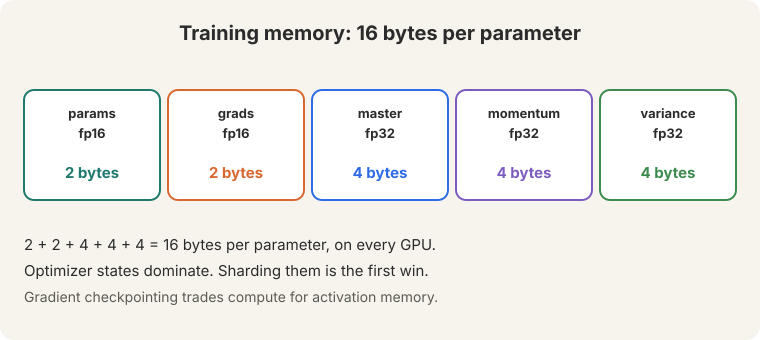
14. Speech from the brain
Locked-in patients have working brains and unresponsive bodies. Letter boards take minutes per sentence. Eye-tracking tires. In 2017, imagined movement drove a virtual keyboard at ~40 chars/min peak. Participant T12’s four implanted arrays (two in motor cortex, two in Broca’s area) decode speech in real time: motor cortex carries the signal. Word error rate ~25% here, near zero at UC Davis after continuous training. Speed: 60-70 wpm against 150 natural. Frontier: decode inner speech, and drive 3D avatars from phonemes plus articulation.
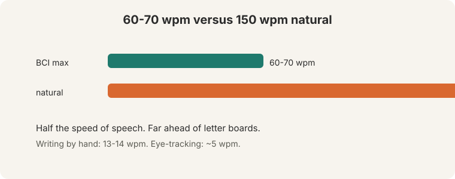
15. Reasoning, agents, and life after DPO
Reasoning comes in three flavors: deductive, inductive, abductive. Prompt it with chain of thought. Stabilize it with self-consistency (sample, majority vote). Test it with counterfactuals: base-9 arithmetic separates memorization from reasoning. An agent is a network in a loop: observation, action, goal. 2024’s reframing is trajectory modeling: “chain of thought prompting in a loop.” Benchmarks (MiniWoB, WebArena, WebLinx) show a huge human-model gap. Models make trivial unrecoverable mistakes.
After DPO, alignment’s questions are: online versus offline (fresh data and fresh labels win), self-rewarding loops, beyond-pairwise methods (KTO, Starling, SteerLM), and whether reward models just match distributions. Data is a moat: Meta bought 1.5M comparisons for LLaMA 2.
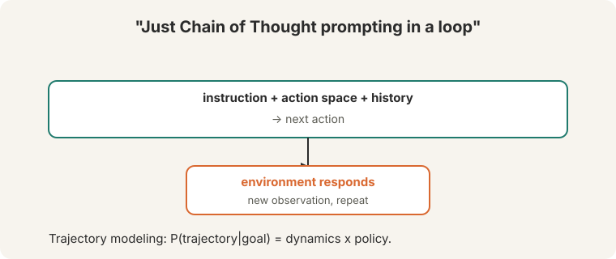
16. What the deep versions add
Every lesson grew subchapters that add one idea at a time: no jumps. The highlights, each with a worked toy or a concrete number:
- Lecture 1: CBOW walks before skip-gram runs. Hierarchical softmax turns the 400K-word softmax into 19 binary decisions.
- Lecture 2: subsampling discards “the” 98.6% of the time. FastText builds unseen words from subword pieces.
- Lecture 3: ReLU before GELU, one increment each. Forward-mode vs reverse-mode: why every framework chose reverse.
- Lecture 5: temperature, top-p, perplexity, each with a toy worked through.
- Lecture 6: the GRU as the LSTM’s leaner sibling. Beam search with real scores.
- Lecture 7: dot vs additive vs general, then scaling. Local vs global attention.
- Lecture 8: GQA, RoPE, FlashAttention: the production trio as of Oct 2026.
- Lecture 9: MLM, CLM, span corruption, RTD side by side. Full fine-tune vs LoRA vs prefix.
- Lecture 10: the DPO loss term by term (margin 1.38, loss 0.40).
- Lecture 11: Elo math with an upset worked out. Contamination as the score killer.
- Lecture 12: data, tensor, and pipeline parallelism. Quantization: 8-bit nearly free, 4-bit cheap.
- Lecture 13: the signal chain from spikes to words. Invasive vs non-invasive.
- Lecture 14: ReAct, tree of thought, Reflexion: three different bets.
- Lecture 15: iterative DPO, self-rewarding, KTO: life after DPO, as of Oct 2026.
17. One-glance tables
Exam day is pattern matching. These tables are the patterns.
Decoding. Greedy picks the top word every step: fast, deterministic, repetitive. Beam keeps k hypotheses: costs k times, fixes greedy’s early mistakes. Temperature reshapes the distribution: low is conservative, high is wild. Top-p cuts the tail: keep the smallest set summing to p. The chat standard is temperature plus top-p: reshape, then cut.
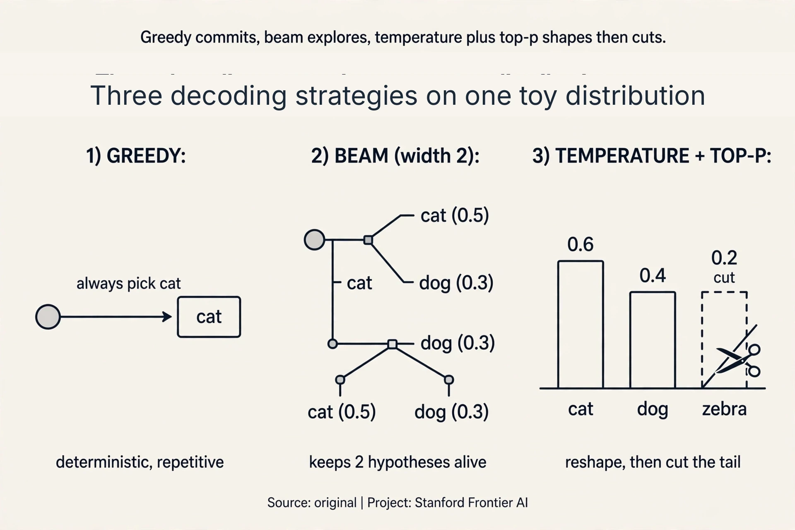
Pretraining objectives. Same sentence, four masks. MLM: mask tokens, predict with both directions. CLM: predict the next token, past only. Span corruption: mask whole spans, generate them back. RTD: replace tokens, label every token original or fake. The objective follows the architecture: encoders read (MLM), decoders write (CLM).
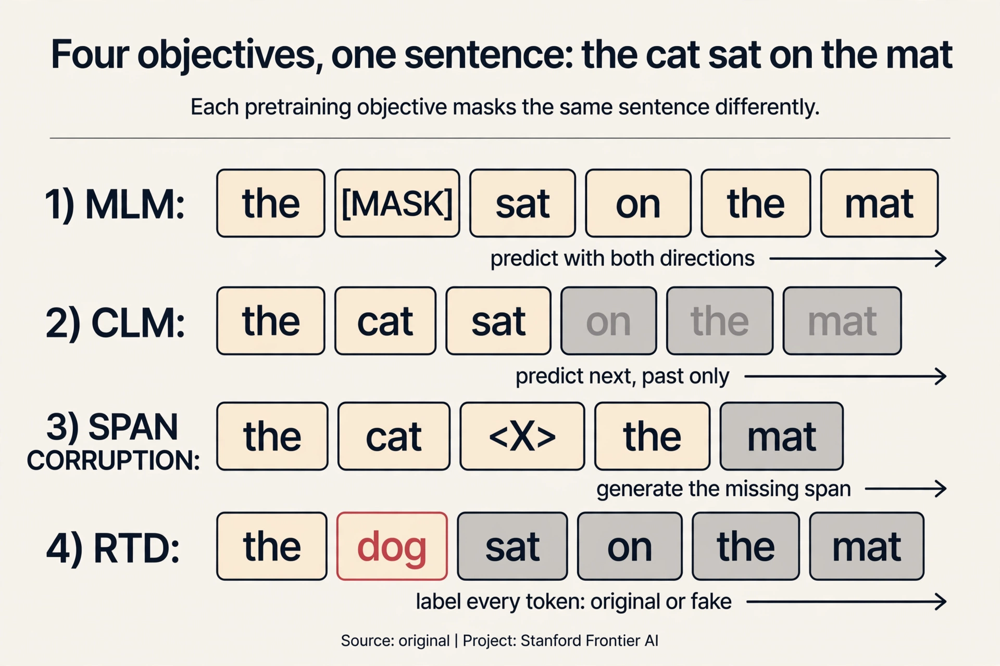
Attention variants. MHA: H query heads, H key-value heads. Full quality, full cache. MQA: one key-value head shared by all. Smallest cache, some quality loss. GQA: G key-value heads in groups. The middle ground, and the open standard (Llama 2/3). MLA (DeepSeek): compress keys and values into a latent vector. The most aggressive public design.
Eval metrics. BLEU: precision, translation. Needs a brevity penalty. ROUGE: recall, summarization. BERTScore: embedding cosine similarity, meaning over overlap. Elo: pairwise human votes, chess math. Human eval: the gold standard, 67% agreement, never comparable across papers.
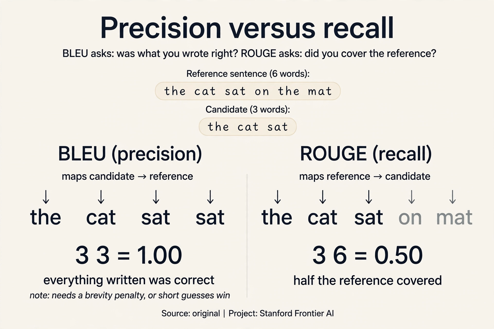
Fine-tuning. Full: move every weight a little. Wins on large shifts, costs the most. LoRA: freeze W, train rank-r BA, merge at inference. Zero latency. Adapters: small bottleneck layers. Extra latency at inference. Prefix: learned virtual tokens. Eats context length.
Parallelism. Data parallel: copy the model, split the data, all-reduce gradients. Tensor parallel: split each layer, needs NVLink. Pipeline parallel: split by depth, bubbles idle some GPUs. The 3D combo trains the largest models.
18. Memory aids
Mnemonics.
- Q-S-S-W-C. Attention in five steps: Query, Score, Softmax, Weighted-average, Concatenate.
- F-I-O. The LSTM gates: Forget (really “remember”), Input (writes), Output (reveals).
- T-M-O. RLHF in three stages: Tune (SFT), Model (reward), Optimize (RL).
- 2-2-4-4-4. Mixed-precision bytes per parameter: 2 params, 2 grads, 4 master, 4 momentum, 4 variance. Total 16.
- A-L-H. The eval ladder: Automatic for speed, LLM judge for dev loops, Humans for final claims.
Never-confuse pairs.
- Perplexity vs entropy. Perplexity is e to the entropy per word. Read it as live choices, not as information.
- Temperature vs top-p. Temperature reshapes the whole distribution. Top-p cuts the tail. Different knobs, used together.
- BLEU vs ROUGE. BLEU is precision: was what you wrote right? ROUGE is recall: did you cover the reference?
- Forward-mode vs reverse-mode. Forward costs one sweep per input. Reverse costs one sweep per output. Networks have millions of inputs and one loss: reverse wins.
- Vanishing vs forgetting. Vanishing is the backward pass: the gradient dies. Forgetting is the forward pass: the memory fades. The LSTM fixes both with the same gate.
- DPO vs PPO. DPO is offline classification on fixed pairs. PPO is online RL on fresh generations. Same preference goal, different data.
- MLM vs CLM. MLM sees both directions: it reads. CLM sees only the past: it writes.
- Greedy vs beam. Greedy keeps one path and commits. Beam keeps k paths and compares. Beam costs k times more.
- MHA vs GQA vs MQA. MHA: one KV head per query head. GQA: KV heads shared in groups. MQA: one KV head for all. The cache shrinks each step.
- Fine-tuning vs continued pretraining. Fine-tuning uses labeled task data. Continued pretraining uses unlabeled domain text. Different data, different stage.
If this, then that.
- If the KV cache eats your GPUs, then share it: GQA, or MLA if training from scratch.
- If batch-1 does not fit, then LoRA first, ZeRO-3 second.
- If annotators disagree on scores, then collect pairwise preferences instead.
- If a benchmark saturates (MMLU 25% to 90%), then the field moves on. Do not chase a dead ruler.
- If serving long context, then RoPE, and test extrapolation before claiming the length.
- If the tail is crazy, then top-p, not just a lower temperature.
- If the task is local (keyboard autocomplete), then a smoothed n-gram, not a transformer.
- If the gradient explodes, then clip the norm. If it vanishes silently, then change the architecture: gates, residuals, attention.
- If reward scores climb while human preference stalls, then you are hacking the proxy. Stop and fix the reward.
- If the harness differs, then never compare the numbers. Reproduce the setup or do not cite it.
Rapid-fire Q&A
Q: Why did word2vec need negative sampling? A: The softmax normalizes over 400,000 words per prediction. Negative sampling trains k+1 logistic regressions instead.
Q: What is backpropagation in one sentence? A: The chain rule applied efficiently: one backward sweep reusing stored intermediates.
Q: Why is vanishing worse than exploding? A: Exploding is visible and clippable. Vanishing is silent: nothing learns.
Q: Why did attention beat recurrence? A: Constant interaction distance plus full parallelization. The LSTM had neither.
Q: Why mask the future? A: Otherwise the model reads the answer during training and learns nothing.
Q: What does pretraining teach? A: Trivia, syntax, coreference, semantics, sentiment, world models. Form, not truth: fluent but frequently wrong.
Q: What is DPO’s trick? A: The intractable normalizer cancels in Bradley-Terry, leaving binary classification. No reward model, no RL.
Q: Why not trust BLEU? A: Overlap is not meaning. “yep” scores 0. “heck no” scores well.
Q: What costs 16 bytes per parameter? A: Mixed-precision Adam training: 2 params + 2 grads + 4 master + 4 momentum + 4 variance, per GPU.
Q: Online or offline alignment? A: Online: fresh data from the policy, refreshed labels. April-May 2024 papers agree it matters.
Q: Temperature 0.5 or 2.0? A: 0.5 sharpens: conservative, repetitive. 2.0 flattens: wild, incoherent. 1.0 is the honest distribution.
Q: What is GQA in one sentence? A: Query heads share key-value heads in groups: the KV cache shrinks by the group size with little quality loss.
Q: What is perplexity, really? A: The effective number of choices the model hesitates over per word. Lower is better.
Q: Skip-gram or CBOW for rare words? A: Skip-gram. Each rare word gets its own prediction task as a center word. CBOW averages the context and drowns rare signals.
Q: Why the 80/10/10 rule in BERT? A: [MASK] never appears at fine-tuning time. The 10% random and 10% unchanged cases stop the model from leaning on a token it will never see again.
Q: What is the KV cache? A: The stored keys and values for every past token, per head. It makes generation O(1) per step and grows with context length. That is why GQA and MLA exist.
Q: RoPE in one sentence? A: It rotates queries and keys by position, so the dot product sees only the relative angle between tokens.
Q: What is exposure bias? A: Teacher forcing trains on gold histories. Inference runs on the model’s own mistakes. The model never practiced recovery, so errors compound.
Q: Why did the transformer beat the LSTM? A: Constant interaction distance plus full parallelization. The LSTM had neither.
Q: In Elo, why do upsets move more points? A: Expected wins teach nothing. Surprises teach the most. The update is K times actual minus expected: 1500 vs 1600, upset win, K=32, moves 20.5 points.
Q: What is contamination? A: Test data leaking into training. The model memorizes the answers and the score overstates true capability. Detection is n-gram filtering.
Q: ZeRO-3 in one sentence? A: Shard the optimizer states, the gradients, and the parameters across GPUs. 112 GB on 8 GPUs becomes 14 GB each.
Q: What is LoRA’s merge property? A: Fold BA into W after training. The model is byte-identical in shape to the original: zero extra inference latency.